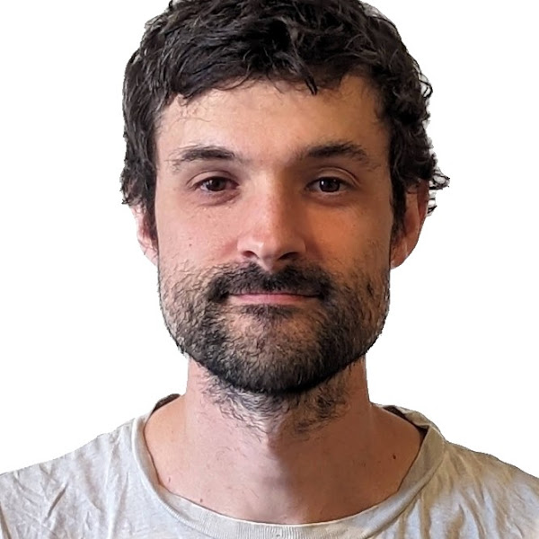

Staff Research Engineer at Google DeepMind

I have an education in Telecommunications Engineering and Experimental Psychology. My research spans Reinforcement Learning, Game Theory, Neuroscience, Psychology and Economics.
I am native Spanish and Catalan, fluent in English and French, and learning German. I currently live in Berlin (previously in Barcelona, Paris, Oxford, and London).
I obsess with anything ... maths, theoretical physics, programming, novels, music, photography, investing, macroeconomics, blockchain, videogames, VR, ...